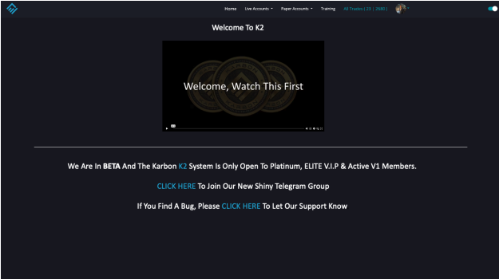

Introduction
Welcome to the Karbon trading platform documentation. This guide will help you understand and configure all features of the platform.
1.1.Purpose
This platform facilitates effortless trading by allowing users to establish personalized settings, thereby enabling trades to be executed automatically and requiring minimal human intervention. The platform assists in closing trades automatically when they reach a profitable point. This streamlined approach ensures a user-friendly experience that stands out from traditional trading platforms.
1.2.What is Trading
Trading is the buying and selling of financial instruments in order to make a profit. These instruments range from a variety of assets assigned a financial value that can go up or down. Trading involves active participation in the financial markets compared to investing, which works on a buy-and-hold strategy. The success of trading depends on the ability of a trader to be profitable over a period of time.
A trader is a person who gets involved in buying and selling a financial asset in any financial market. They can buy or sell either for themselves or on behalf of another individual or institution. The main difference between an investor and a trader is the duration for which they hold the asset.
A trader is a person who engages in the short-term purchasing and selling of equity either for an institution or for themselves.
1.3.What is a Candlestick
A candle stick is a type of price chart used in technical analysis that displays the high, low, open, and closing prices of a security for a specific period.
wherein each candlestick details a single day's trading. It has three essential features:
- The body, which represents the open-to-close range
- The wick, or shadow, that indicates the intra-day high and low
- The color, which reveals the direction of market movement – a green (or white) body indicates a price increase, while a red (or black) body shows a price decrease
Over time, individual candlesticks form patterns that traders can use to recognize major support and resistance levels. There are many candlestick patterns that indicate an opportunity within a market – some provide insight into the balance between buying and selling pressures, while others identify continuation patterns or market indecision. CandlePatternsAll strategy calculates all candlestick pattern indicators that are available on the platform. Essentially, the strategy differs from the CandlePatternsMultiple strategy only by calculated indicator count and by the way the list of indicators gets compiled.
This real body represents the price range between the open and close of that day's trading. When the real body is filled in or black (also red), it means the close was lower than the open. If the real body is white (or green), the close was higher than the open.

1.4.What is a Candle Indicator
This indicator paints each candle green, red, or blue depending on whether the buy/sell pressure for that candle is bullish, bearish, or neutral.
1.5.How to Use Indicator
When the directional movement index indicator shows more buying pressure than selling pressure, the candle will appear lime green. This indicates bullish buying pressure. When the directional movement index indicator shows more selling pressure than buying pressure, the candle will appear red. This indicates bearish selling pressure. When the directional movement index indicator shows the same amount of buy and sell pressure, the candle will appear blue. This indicates neutral buy/sell pressure. 8 Use the color changes to see if there is more buying or selling to pinpoint reversals and understand current market buying. Wait to enter or exit positions until the candles turn the opposite color.
1.6.How does Trading Work
When trading, the user profit if the market price moves in the same direction as the user's speculation; however, if it takes the opposite direction, the user incur a loss. It's important to note that trading is inherently risky and could lose more than expected if don't take the appropriate risk management steps. Trading happens between two parties and often involves a dealer network. No central, physical location only a virtual network of participants. Timings 24/7. Contracts are Customized. Counterparty risk, assets can be more volatile, and can be traded on leverage, which means there's a risk of losing more than the deposit
2.0.User Types And Sign Up
Documentation about user Types and Sign Up to the Karbon
2.1.User Types
| User Type | Description |
|---|---|
| Default User | Default user is created after the signing up process |
| Admin User | Responsible for implementing and maintaining security services, such as adding users, building profiles, or managing general site administration |
| Lab User | This is another existing user type. Able to add strategies to the system |
| Elite User | Auto execution subscribe and account balance 1000USDT |
| Pro User | Not defined yet |
| Pro + User | Not defined yet |

2.2.Sign Up
To use this platform user needs to create an account by simply providing their Name, Email, and password

After creating an account on Karbon, users are able to connect their online exchanges with their new Karbon account. Before connecting exchanges, the user needs to create an account on the exchange platform. Bybit and Bitget are online exchanges where users can trade cryptocurrencies we are planing to add binance exchange near future

3.0.Home
Brief introduction to Karbon UI
3.1.Welcome Message & Links

3.2.Color Theme Changing
Site theme can be changed according to the user's desire. Blue and Green colors are available.

3.3.Accounts

4.0.Create Trading Account In Exchangers
4.1Create ByBit New Account
click here to open bybit
There are two ways to create a Bybit account:
Click Sign in on the top right corner of the Bybit homepage. Then click Sign up. You can choose to sign up by email or phone number. Fill in the required information and click Sign up. You will receive a verification code in your email or phone number. Enter the verification code to complete the sign-up process.
Make sure you have understood and agreed to the terms and privacy policy, and after checking that the information entered is correct, click on Create Account on your desktop or Continue on your mobile.
4.2.How To enable 2FA authentication
Step 1- Click your Bybit Profile icon and go to account and security page

Step 2- In account and security scroll down the page to advance protection.
Step 3- Click settings related to google two factor authentication.

Step 4- Check your email to verification code and enter that code to security verification.
Step 5- downloads google authentication app and scan the QR code given in the popup window and enter the authentication code in given field in the popup window.
Step 6- Click confirm to finish the setup
4.3.How to Create Sub Account on bybit
Step 1- Go to user setting by clicking profile icon in bybit.
Step 2- Click subaccounts tab
Step 3- Click Create subaccount button.

Step 4- Click standard subaccount.
Step 5- Enter any name without space and select account type to standard

Step 6- Click confirm to finish the setup.
4.4.Create Your API Key on Bybit Subaccount
Step 1- enter your account's settings page. Perform a login if prompted. Alternatively, you can click the human icon on the top right corner of your trading page, go to "Subaccounts" then click "Management "in created sub account

Step 2- Click on 'Create New Key' located on the right side of the 'API Management' page
Step 3- Click system-generated API keys.
Step 4- The following pop-out window will appear. Please configure your API key according to your trading needs.
Step 5- Enter 2FA code and confirm. You have successfully created your API key!
"Users can add the IP address that was provided by the Karbon team to the API creation process to prevent other unauthorized IP addresses."
4.5.How to Add funds to sub account


5.0.Bitget Accounts
Account create and Api Creating
5.1.Create Bitget New Account
To create a new account on Bitget, first, you need to download the Bitget app or head to the Bitget website on a desktop. You can access Bitget anytime and on multiple platforms, including iOS and Android, browser-based websites, as well as a desktop application for Mac and Windows.


Step 1- click here to open Bitget
There are two ways to create a Bitget account:
Step 2- Make sure you have understood and agreed to the terms and privacy policy, and after checking that the information entered is correct, click on Create Account on your desktop or Continue on your mobile.
Step 3- A verification page will pop up. Please drag the slider to complete the verification requirements.
Step 4- Lastly, enter the verification code sent to your email inbox.
Step 6- You have successfully registered an account on Bitget.
5.2.How to Create API Key on Bitget
Step 1- Click on the link above to enter your account's settings page. Perform a login if prompted. Alternatively, you can click the human icon on the top right corner of your trading page.

Step 2- Click on the create API,

Step 3- Enter Notes- API passphrase- permission settings- Link IP address - email verification codeSMS verification code- Google verification code

Step 4- API Creation Completed.
6.0.Connect Accounts to Karbon
Users can create a new account by providing the necessary information.
6.1. Create New Account.


7.0.KarbonDX Dashboard
Brief overview about account tile in karbonDX Dashboard.
Account balances are displayed at the top of the page

Available Balance vs Wallet Balance.
The account balance is not updated until the trade is closed. If a profit comes, it will be added to the account balance. If there is a loss, it will be subtracted from the account balance

The available balance is updated when opening the trade. Trade is opened by taking the available balance. If the existing available balance is lesser value, the trade cannot be opened
7.1.Opened trade is displayed on the Dashboard and All trades.
The trades added manually from the Karbon will start tracking once it open and the platform will start tracking once it Added from the Karbon side.

If any of the following errors appear in the log mentioned below, tracking will be disabled.
- unified account is forbidden
- Adjust will trigger liq
- Permission denied
- api_key expire
- AB not enough
- invalid api_key
- unmatched ip
- cannot set leverage
- CannotAffordOrderCost
- position idx not match position mode
- Insufficient position
- API key is invalid
- Invalid ACCESS_KEY
- The order size is greater than the max open size
- Unable To Update The Leverage Factor Of This Position, There Is Not Enough Margin!
- Unmatched IP, please check your API key's bound IP addresses
- current position is zero, cannot fix reduce-only order qty
- Reduce-only rule not satisfied
- Too Many Requests
- There is currently an order, or an order is planned, and the leverage cannot be adjusted.
- The product or service you are seeking to access is not available to you due to regulatory restrictions.If you believe you are a permitted customer of this product or service,please reach out to us at support@bybit.com
- Exceeded the maximum settable leverage
- Less Than The Minimum Amount 5 USDT
- Qty not in range
- The order size cannot exceed the maximum size of the positionLevel
- No trade found
- Any Adjustments Made Will Trigger Immediate Liquidation
- The number of contracts exceeds maximum limit allowed: too large
- Params Error: Buy Or Sell Leverage Is Greater Than
- Fix Price Failed For
7.2.Opened trades In trading platform
Opened trades in the trading platform are displayed in the dashboard.

Add & Sync
Platform trades can be added to our side, and when added, the leverage will be checked.If the one on the platform is not up to date, we can sync it

7.3.Market Data
This content originates from TradingView and serves the purpose of visualizing market data.

Manual Trade Currency Table
In this section, you'll find a trading currency table that provides 1-hour, 24-hour, and 7-day chart change values, along with volume and current currency prices.

7.4.Trades Tab
This tab contained all the data related to running trades and closed trades.

7.5.Logs Tab
This tab contained all the activities related to Trades

7.6.Notes Tab
Users are able to edit the name of the money management setting and save them.

8.0.Configuration
Configuration of the KarbonDX platform
8.1.Trade Size setup
Trade size setup is the amount of money that a trader is willing to risk on a trade. It is important to set the trade size to a level that is comfortable for the trader and that will not cause financial hardship if the trade is lost. The trade size setup is the amount of money that a trader is willing to risk on a trade. It is important to set the trade size to a level that is comfortable for the trader and that will not cause financial hardship if the trade is lost.

8.2.How Do You Want to Close Your Trade.
- the Default option is "Close My Trade by Profits Karbon Advanced Management
- If this is selected "Wait for Close Signal for Trading View" trade is not running according to the stages.

If select "Wait for Close Signal for Trading View", it will not be managed by Money management, and need to check if there are no active trades also the existing trades can be liquidated
Important: If you are using TradingView signals to manage trades, make sure trades are not redirected to the overflow account. Always double-check that the maximum trade count is sufficient to support your TradingView strategy. If trades are redirected to the overflow account, they will run using the configuration defined for that overflow account.
8.3.Trade Size
In this section, the user can define the order value of the trades that open using karbon.

8.4.Max No Of Trades(Long and Short)
- Long
- Short
Maximum number of open long trades means, the user is not allowed to open the long trades more than the selected number. If the user tries to open more trades "Karbon blocked this trade due to a maximum number of running long trades" message will be displayed
Maximum number of open short trades means, the user is not allowed to open the short trades more than the selected number. If the user tries to open more trades "Karbon blocked this trade due to a maximum number of running short trades" message will be displayed

8.5.Leverage
Leverage is the ability to control a large position with a small amount of capital. It is a double-edged sword that can magnify both gains and losses. The leverage is the amount of money that a trader is willing to risk on a trade. It is important to set the leverage to a level that is comfortable for the trader and that will not cause financial hardship if the trade is lost.
Leverage types

8.6.Minimum Profit Target
Minimum profit target means, the trade is closed automatically when the profit is reached.

8.7.Enable Trade Hedging
In one-way mode, trade cannot be opened on both sides in the same currency. In hedge mode, trades can be opened on both sides in the same currency. If Enable Trade Hedge in settings is "Yes" the hedge trade button will be visible.

8.8.Create Stages for Trading View Trades
When the user has selected to wait for a closing signal from Tradingview, created trades must have only one stage. It will be a type 3 (close) stage and the call at percentage & the profit at percentage will be the user's trade size setup values (Long safety take profits %, Long safety stop loss %, Short safety take profits %, short safety stop loss %). The value for that stage will always be 100%.

8.9.Configurations setup examples.
Normal Hedge Cycle with Unlimited Loops
To run normal hedge cycles with unlimited loops:
- Do not use a reopen stage.
- Set the cycle count to unlimited.
 this configuration runs unlimited hedge cycles.
this configuration runs unlimited hedge cycles.
Unlimited Reopen Trades Using the "Reopen Trade" Stage
If you need to run the reopen stage after every 100% close stage:
- Include the reopen stage as the last stage.
- Set the cycle count to unlimited.

 This configuration allows unlimited trade loops with the reopen stage active.
This configuration allows unlimited trade loops with the reopen stage active.
Setup for Specific Cycle Count in a Hedge Trade without reopen stage
To configure a trade with a specific number of cycles:
- Set the cycle count to the desired number.
- Ensure the 100% Close Trade is the final stage.

Running Reopen Stage After a Specific Cycle Count.
To run the reopen stage only after completing a certain number of cycles:
- Set the reopen stage at the end of the configuration.
- Define your desired cycle count.

Example:
- Cycle Count = 10
9.0.Advance Money Management Settings
Configuration of Advance Money Management Settings In the KarbonDX platform
9.1.Classic and Split Mode(With Positive)
Users can switch between combine mode and split mood using mentioned button below in karbon config page.

- Classic Mode
- Split Mode(with positive)
When the combine mode is enabled, there are no positive stages; each negative stage has a user-defined take profit it self.Users can add stages as many as they want.
In split mode, positive and negative stages are defined separately. Users can set positive stages as well as negative stages, many as they want. This feature is only for a selected user set. If you cannot see this. You are not in that user list.
9.2.Stage Types.
In the Karabon platform, there are 8 types of actions that can be triggered as per your settings
- Close Trade
- Change Leverage
- Change Leverage Type
- Repurcherse
- reopen trade
- convert to Hedge
- reopen trades (Another Account)
- Close All Hedge trades
- Trailing Take-Profit
9.3.Close Trades.
In this take action, users can define a profit or loss percentage and position size that need to close. If the trade PnL% hits that given value, the action will trigger immediately.

Ex: In this stage, the trade will close 100% of the opened trade size at positive 12% PnL.
9.4.Change Leverage
Change leverage is a feature that allows users to change the leverage of the trade. If the trade PnL% hits that given value, the action will trigger immediately.

Ex: In this stage, the trade will change the leverage to isolated 10x at negative 50% PnL.
9.5.Change Leverage Type
Change leverage type is a feature that allows users to change the leverage type of the trade. If the trade PnL% hits that given value, the action will trigger immediately.


Ex: In this stage, the trade will change the leverage type to cross 10x at negative 50% PnL.
9.6.Repurchase
Repurchase is a feature that allows users to repurchase the trade. If the trade PnL% hits that given value, the action will trigger immediately.

Ex: In this stage, the trade will repurchase 50% of the opened trade at negative 50% PnL.
9.7.Hedge Trade All close
This is a trade action type with a 100% close; users cannot set any stages after this stage set. and also it can be set in a combine mode, split mode, or positive and negative side. If the hedge trade hit this stage, both trades are closing at the moment. that close, not calculate profit gain

9.8.Convert To Hedge
In the "Convert to Hedge" stage, a trade open signal is triggered for the opposite side of the existing position. As a result, both long and short trades are held on the same currency pair, which are then transitioned into a hedged state. Make sure to configure the trade value or percentage—based on your basic settings—to determine the position size of the opposite trade.
Conditions to be Hedge
- Split Mode
- LabUser && Trade Hedgeing = Yes
- Combine
- LabUser && Trade Hedgeing = Yes

9.9.Trade Reopen Stage
The "Reopen Trade" stage initiates a new trade(either on the Long or Short side)based on a specified percentage of the previous trade's PnL. To configure this stage, a "100% Close Trade" stage must be set beforehand; without it, the Reopen Trade stage cannot be activated.

9.10.Trade Reopen Stage (Another Account).
Similar to the "Reopen Stage" feature, instead of opening a new trade in the same account, the "Reopen in Another Account" option allows triggering a trade signal in a different, user-selected account already added to Karbon.

Users can configure the trade side (Long/Short) and specify which account the new trade should be executed in.

9.11.Reset after Swing
In Karbon platform We can use 2 deferent methods in hedge mode.
- Reset after Swing
- No reset after Swing
In this mode, users can create a hedge trade that will be reset its stages after hit opposite side 1st stage For a example : if trade is at P4 stage and going down to hit N.1. after hit N.1 positive stages reset and it became P.entry stage. If negative stage is repurchase, that quantity will be dropped with small profit at latest entry price. For that It create TP order in Bybit
In this mode, users can create a hedge trade that will not be reset its stages after hit opposite side 1st stage For a example : if trade is at P4 stage and going down to hit N.1. after hit N.1 positive stage remains P.4 stage.

9.12.End cycle at % gain
In this scenario, after opening the latest trade in hedge mode, we record the latest wallet balance, if user set this value to unlimited, it automatically starts HCP process (hedge close profit), The user can enter a % value using the dropdown menu, and we check after the selected stage hits; the profit of that hedge trade at the beginning, if the profit is => wallet_balance * selected_percentage, both trades will close and reopen until the cycle count is finished. for example, if the wallet balance is $1,000(available balance at trade open time) and the user selects 2% from the dropdown, the system will monitor the profit of the hedge trade. When the profit reaches at least $20 (which is 2% of $1,000), both the long and short trades are closed, and new hedge trades are immediately opened.

Combined Profit
This add-on is related to the wallet-gain process when running multiple hedge trades. Assume you open hedge trades using two or more pairs and set the wallet-gain target to 5%.
- If Combine Profit is OFF: The wallet-gain percentage is calculated per pair. Each pair must individually reach 5% gain. When a pair meets the profit requirement, only that specific pair will close.
- If Combine Profit is ON: The wallet-gain percentage is calculated using the combined profit of all hedge trades in the group (two or more pairs). Once the total profit across the group reaches the required 5% gain, all hedge-trade pairs will close together.

9.13.Hedge trade PnL cycle count
The user can define the cycle count by this setting; that means if a hedge trade is closed with a profit (after user-defined stage using checkBox), it triggers a new hedge trade pair. The user can define using this setting how many times it needs to run; after the cycle count ends, no hedge trade is open for that pair.

9.13.Trailing Take-Profit
A trailing Take-Profit order is designed to protect profits by automatically adjusting the stop price as the market moves in your favor. It follows the highest price reached since the order's been placed, maintaining a dynamic stop level below the market price. If the price drops and reaches the stop price, the sell order is triggered, and the position is closed at the prevailing market price. Using a percentage as the trailing amount in a trailing Take-Profit allows a trader to adapt their exit strategy to the specific market conditions and volatility of the asset being traded. When setting a trailing Take-Profit with a percentage, you specify the ratio by which the market price can retrace before triggering the Take-Profit.

For example, if you enter a hypothetical long position on Bitcoin at $50,000 and set a trailing Take-Profit at 5%, the trailing Take-Profit will move up as the price increases. If the price reaches $60,000, the trailing Take-Profit amount would be set at $57,000 (5% below the peak price). If the price drops and reaches $57,000, the trailing Take-Profit is triggered, placing a sell order into the market, and your position is closed. Using a percentage as the trailing amount allows traders to maintain a dynamic approach to their exit strategy. By adjusting the percentage based on the asset's volatility and market conditions, traders can optimize their risk management and maximize potential profits.
For more information please watch this video Click Here (We use a trailing take-profit instead of a trailing stop-loss, as both work in the same way functionally.)
10.0.Auto Trading
The Auto Trading feature enables automated trade execution and management through either TradingView signals or Admin signals.
Auto Trading supports the following:
- Admin-triggered signals
- Direct integration with TradingView strategies
- AI Trading Algorithms
- Auto TradingView Alert Setup.
10.01. AI Trading Algorithms
AI Trading Algorithms are admin-configured strategies. Users can enable and run these algorithms by selecting their preferred ones. If a user is subscribed to an algorithm, whenever the admin triggers a signal for that specific algorithm, the user's account will automatically execute a trade based on the admin-defined settings. This feature is user-type based. The admin can define which user types are eligible to participate in specific strategies.
10.02.Auto TV Alert Setup
Auto TradingView Alerts are another type of admin-defined strategy, similar to AI Trading Algorithms. The key difference is that all users can subscribe to these strategies without user-type restrictions. Once subscribed, trades will be executed automatically whenever the admin triggers the corresponding signals.
10.03.Manual TV Alert Setup
Manual TradingView Alerts allow users to integrate their own TradingView strategies directly with Karbon using a provided webhook URL and message body. Both must be added to TradingView for the connection to work. When TradingView triggers signals, Karbon will automatically execute them. Users can also define the strategy execution method in the "How do you want to close your trade" setting on the config page:
- Select "Wait for close signal from TradingView" if you want TradingView to manage the strategy fully.
- Select "Close my trade by profits – Karbon Advanced Management" if you want Karbon's Money Management stages to handle trade closures.
11.0.Common Errors
Some common errors that can occur while using the hedge mode in Karbon:
11.1.Tracking Disabled errors
If any of the following errors appear in the log mentioned below, tracking will be disabled.
- unified account is forbidden
- Adjust will trigger liq
- Permission denied
- api_key expire
- AB not enough
- invalid api_key
- unmatched ip
- cannot set leverage
- CannotAffordOrderCost
- position idx not match position mode
- Insufficient position
- API key is invalid
- Invalid ACCESS_KEY
- The order size is greater than the max open size
- Unable To Update The Leverage Factor Of This Position, There Is Not Enough Margin!
- Unmatched IP, please check your API key's bound IP addresses
- current position is zero, cannot fix reduce-only order qty
- Reduce-only rule not satisfied
- Too Many Requests
- There is currently an order, or an order is planned, and the leverage cannot be adjusted.
- The product or service you are seeking to access is not available to you due to regulatory restrictions.If you believe you are a permitted customer of this product or service,please reach out to us at support@bybit.com
- Exceeded the maximum settable leverage
- Less Than The Minimum Amount 5 USDT
- Qty not in range
- The order size cannot exceed the maximum size of the positionLevel
- No trade found
- Any Adjustments Made Will Trigger Immediate Liquidation
- The number of contracts exceeds maximum limit allowed: too large
- Params Error: Buy Or Sell Leverage Is Greater Than
- Fix Price Failed For
11.2.Tick Size Error
Assume you have $500 in your trading account, you configure the trade to open with 1% of wallet balance, the starting amount of the trade is $5, with 20x leverage, the total position size is equal to 100%, and with the current market price, you can buy 0.001 BTC for $100. In bybit, the minimum close/open quantity in BTC is 0.001 BTC (tick size). that minimum close/open quantity is different for every pair. In this configuration, the stage is set as 50% close, which is equal to 0.0005 BTC. In this scenario, bybit rounded the value to 0.001 because of tick size; in that case, trade is closed 100% from the bybit side.
For more Info : Click Here
bybit parameters for tick size : Click Here
11.3.Base Price Error
Positive trade close _ in positive trade close this error can log , reason for that error is the price of the TP order that we Trying to place is lower than last price , solution for this error is if error logs ,in that time we execute the active stage of that trade ,
For more Info : Click Here
11.4.API key errors
error - "API key is invalid."
reason - Incorrect bybit api key
11.5. Conflict in TPs
Error - Repurchase TP is greater than partial close TP
reason -
- Partial TP (ROI-based): Triggers when your profit reaches a percentage of your investment (e.g., 0.5% ROI).
- Repurchase TP (Price-based): Triggers when the price hits a specific level (e.g., entry price ±0.1%).
latest entry=100,partial close at 0.5%, leverage 20x
Repurchase TP creating (based on Trigger Price) at 100.1 .
partial close TP creating (based on ROI) at 100.02 .

11.6. Available balance incorrect error.
If you notice a slight difference in your account balance (available or total) in the Karbon system, it’s because the API we use retrieves wallet balances in USD instead of USDT. On Bybit, balances such as account margin and available funds are shown in USDT, while in Karbon they appear in USD. This may cause a small variation between the two. for an example ,if your Bybit balance is 100 USDT and the USD/USDT rate is 1.001, Karbon may show it as 100.1 USD. This small conversion difference is normal and comes from the way the API fetches wallet balances.
11.07. Available balance incorrect error.
In Karbon, there is a program that can recreate deleted TP/TTP orders. In rare cases, if you try to pause a trade at the same time the program runs, the trade may pause in Karbon but a new TP/TTP gets created. If you notice TP/TTP orders still active on Bybit for a trade that is paused in Karbon, please delete those TP/TTP orders manually or resume the trade and try pausing it again.
11.08. Assest Mode Conflict In Bitget.
When trading on Bitget, if your account is set to Multi-Asset Mode, you cannot open trades in Isolated Margin. This is because Multi-Asset Mode automatically pools all available assets together to calculate margin, meaning individual positions cannot be managed separately. To maintain control over each position and use Isolated Margin, you should use Single Asset Mode only. Single Asset Mode ensures that margin is allocated per asset, giving you precise control over risk and position sizing. Additionally, using Single Asset Mode is necessary for Karbon AI to function properly, as it relies on it to manage trades accurately.
To Change Asset Mode --: Bitget(platform side)-> Settings -> Under Delivery And Perpetual -> Margin mode -> Multi Assets Margin Mode to Single Assets Margin Mode


12.0. Demo Trading
Bybit Demo Trading offers a simulated environment that mirrors real market conditions, allowing users to practice trading without risking real funds. This feature comes as a simulated Unified Trading Account (UTA), which is automatically created for every user upon signing up with Bybit. The UTA provides an all-in-one account setup, enabling seamless trading across Bybit’s core products with a single click.
12.01.Create Demo Trading Account
To use Bybit/bitget Demo Trading, start by creating a Bybit/bitget account if you haven’t already. After setting up your main account, go to Bybit’s homepage and click the Demo Trading button located either at the top-left corner or in the center of the page. You’ll be directed to the Demo Trading introduction page — simply click Start Now to continue. In the Bitget, go to the Features section in the navigation bar and select Demo Trading.
12.02. Create Demo API
Here’s how to create the API key within the demo environment:
- go to API Management.(from profile icon)
- Click which says “Create New Key” in the API Management page.
- Click system-generated API keys.
- The following pop-out window will appear. Please configure your API key according to your trading needs.
- Enter 2FA code and confirm. You have successfully created your API key!
12.03 Get Funds For Demo Account
Hover over Assets in the top-right menu and select Unified Trading Account. A pop-up window will appear, welcoming you to your demo Unified Trading Account. It provides an overview of the available trading options, such as Spot Trading and Derivatives Trading using USDT Perpetuals, USDC Perpetuals, and USDC Options. Click Done to continue.
You’ll then see your Demo UTA main screen, which displays your total balance, margin balance, and individual asset balances — including demo funds for USDT, USDC, BTC, and ETH. From this dashboard, you can manage account settings such as adding or reducing demo funds and enabling or disabling the collateral option for specific assets.
To modify demo funds for particular coins, click Adjust Demo Funds in the top-right corner. To enable or disable collateral usage, use the toggle switches under the Used As Collateral column.